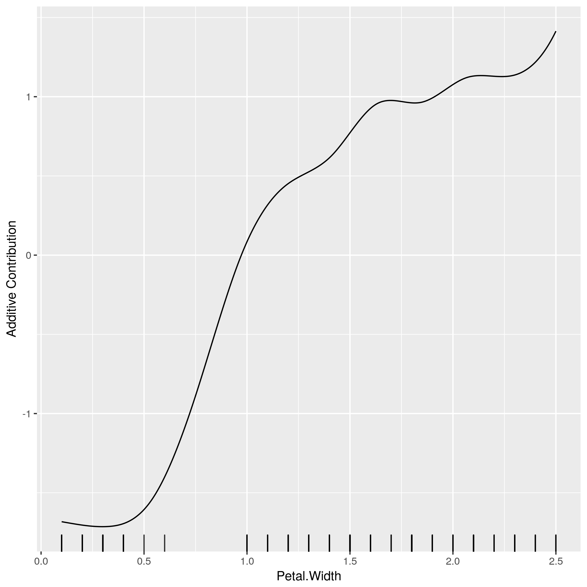
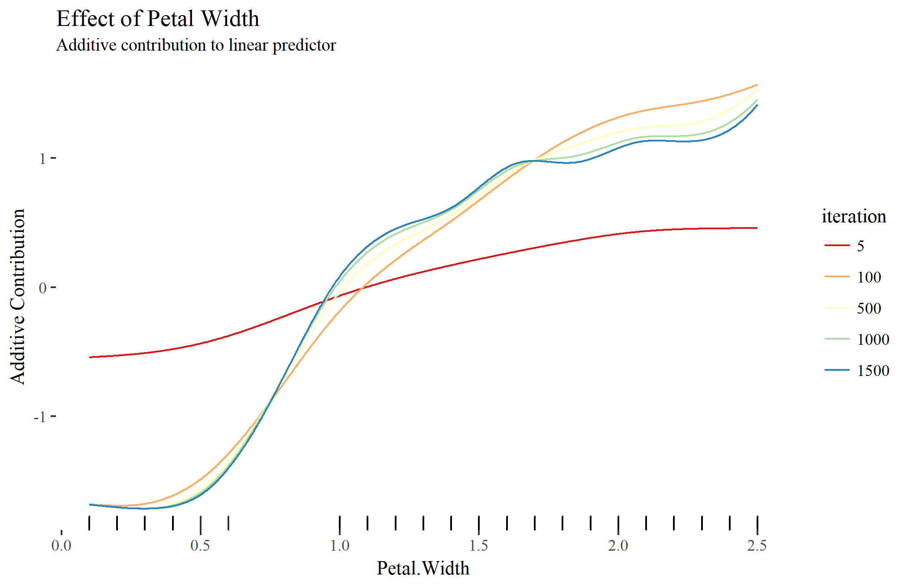

What is component-wise boosting?
Instead of getting huge predictive power, model-based (or component-wise) boosting aggregates statistical models to maintain interpretability. This is done by restricting the used base-learners to be linear in the parameters. This is important in terms of parameter estimation. For instance, having a base-learner \(b_j(x, \theta^{[m]})\) of a feature \(x\) with a corresponding parameter vector \(\theta^{[m]}\) and another base-learner \(b_j\) of the same type but with a different parameter vector \(\theta^{[m^\prime]}\), then it is possible, due to linearity, to combine those two learners to one new one:
\[
b_j(x, \theta^{[m]}) + b_j(x, \theta^{[m^\prime]}) = b_j(x, \theta^{[m]} + \theta^{[m^\prime]})
\]
So, instead of boosting trees like xgboost, model-based boosting uses a selection of important base-learners, each with estimated parameters.
The ordinary way of finding good base-learners is done by a greedy search. Therefore, in each iteration all base-learners are fitted to the so called pseudo residuals at the current iteration that acts as a kind of error of the actual model. A new base-learner is then selected by choosing the one with the smallest empirical risk \(\mathcal{R}_\text{emp}\).

The illustration above uses three base-learners \(b_1\), \(b_2\), and \(b_3\). You can think of each base-learner as wrapper around a feature or category which represents the effect of that feature on the target variable. Therefore, if a base-learner is selected more often than another one indicates that this base-learner (or feature) is more important than the other ones. To get a sparser model in terms of selected features there is also a learning rate \(\beta\) to shrink the parameter in each iteration. The learning rate corresponds to the step size used for gradient descent. The three models within each iteration of the illustration are: \[ \begin{align} \text{Iteration 1:} \ &\hat{f}^{[1]}(x) = f_0 + \beta b_3(x_3, \theta^{[1]}) \\ \text{Iteration 2:} \ &\hat{f}^{[2]}(x) = f_0 + \beta b_3(x_3, \theta^{[1]}) + \beta b_3(x_3, \theta^{[2]}) \\ \text{Iteration 2:} \ &\hat{f}^{[3]}(x) = f_0 + \beta b_3(x_3, \theta^{[1]}) + \beta b_3(x_3, \theta^{[2]}) + \beta b_1(x_1, \theta^{[3]}) \end{align} \] Using the linearity of the base-learners it is possible to aggregate the \(b_3\) base-learners: \[ \hat{f}^{[3]}(x) = f_0 + \beta \left( b_3(x_3, \theta^{[1]} + \theta^{[2]}) + b_1(x_1, \theta^{[3]}) \right) \]
This is a very simple example but it displays the main strength of model-based boosting such as an inherent variable selection very well. Since the fitting is done iteratively on the single base-learners model-based boosting is also a very efficient model for data situations where \(p \gg n\), which is learning in high-dimensional feature spaces. For instance, genomic data where the number of features $p$ could be several thousand but the number of observations are not more than a few hundred.
Getting started with compboost
Get demo code
First of all, the compboost R API is written as R6 class. Hence, defining base-learners works a bit different than using the common formula interface.
Quickstart with wrapper functions
The easiest way of training a component-wise boosting model is to use boostLinear() or boostSplines(). Those two functions takes each feature and wrap them into a linear or a spline base-learner. The parameter are then used for each base-learner. For instance, wrapping each feature by a spline base-learner we can easily use:
library(compboost)
cboost = boostSplines(data = iris, target = "Petal.Length", loss = LossQuadratic$new())
cboost
## Component-Wise Gradient Boosting
##
## Trained on data with target Petal.Length
## Number of base-learners: 6
## Learning rate: 0.05
## Iterations: 100
## Offset: 3.758
##
## LossQuadratic Loss:
##
## Loss function: L(y,x) = 0.5 * (y - f(x))^2
##
## n.knots) or the penalty term (penalty), then they are applied on each base-learner:
cboost = boostSplines(data = iris, target = "Petal.Length", loss = LossQuadratic$new(),
n.knots = 4, penalty = 4)boostLinear() and boostSplines() is an R6 Compboost object. For details on how to use those objects see the section on how to access elements of a fitted model.
Explicitely defining elements
The idea is to explicitely define which learner you want to use on which feature. But first of all we need to define a Compboost object (for convenience we are using the iris dataset):
library(compboost)
cboost = Compboost$new(data = iris, target = "Petal.Length", loss = LossQuadratic$new())
cboost
##
## Componentwise Gradient Boosting
##
## Trained on iris with target Petal.Length
## Number of base-learners: 1
## Learning rate: 0.05
## Iterations: 0
##
## LossQuadratic Loss:
##
## Loss function: L(y,x) = (y - f(x))^2
##loss is given as instantiated object. This object is an instantiated S4 class since the objects are exposed by the Rcpp modules. This also gives the possibility to define a loss with a custom offset. Therefore just call, for instance, LossQuadratic$new(offset = 10).
Now we can add base-learner for the training. The base-learner are added by calling the addBaselearner() member function. This function gets an uninstantiated base-learner object (such as BaselearnerPSpline or BaselearnerCustomCpp). Note that each base-learner needs an identifier which must be given by the user. This makes the selected learner unique and yields an intuitive naming:
cboost$addBaselearner(feature = "Petal.Width", id = "spline", bl.factory = BaselearnerPSpline, degree = 3,
knots = 10, penalty = 2, differences = 2)
cboost$addBaselearner(feature = c("Sepal.Length", "Sepal.Width"), id = "2dim_linear",
bl.factory = BaselearnerPolynomial, degree = 1, intercept = TRUE)
cboost$getBaselearnerNames()
## [1] "Petal.Width_spline"
## [2] "Sepal.Length_Sepal.Width_2dim_linear"cboost$addBaselearner(feature = "Species", id = "categorical", bl.factory = BaselearnerPolynomial,
degree = 1, intercept = FALSE)
cboost$getBaselearnerNames()
## [1] "Petal.Width_spline"
## [2] "Sepal.Length_Sepal.Width_2dim_linear"
## [3] "Species_setosa_categorical"
## [4] "Species_versicolor_categorical"
## [5] "Species_virginica_categorical"
After defining the base-learners we can start the training by calling the train() member function. If train is set, then every, in this case, 200th iteration of the trace is printed:
cboost$train(1000, trace = 200)
## 1/1000: risk = 1.4
## 200/1000: risk = 0.032
## 400/1000: risk = 0.03
## 600/1000: risk = 0.03
## 800/1000: risk = 0.029
## 1000/1000: risk = 0.029
##
##
## Train 1000 iterations in 0 Seconds.
## Final risk based on the train set: 0.029
##
## Access elements of a fitted model
To get a vector of selected feature call getSelectedBaselearner():
cboost$getSelectedBaselearner()[1:10]
## [1] "Petal.Width_spline" "Petal.Width_spline" "Petal.Width_spline"
## [4] "Petal.Width_spline" "Petal.Width_spline" "Petal.Width_spline"
## [7] "Petal.Width_spline" "Petal.Width_spline" "Petal.Width_spline"
## [10] "Petal.Width_spline"
table(cboost$getSelectedBaselearner())
##
## Petal.Width_spline Sepal.Length_Sepal.Width_2dim_linear
## 485 96
## Species_versicolor_categorical Species_virginica_categorical
## 196 223train() with a new number of iterations. This automatically updates the estimated parameter:
cboost$train(1500)
##
## You have already trained 1000 iterations.
## Train 500 additional iterations.
## getBaselearnerNames(). Otherwise compboost can't match the learner:
cboost$plot("Petal.Width_spline")
Sinceplot() always returns a ggplot we can also customize the graphic:
library(ggplot2)
library(ggthemes)
cboost$plot("Petal.Width_spline", iters = c(5, 100, 500, 1000, 1500)) +
labs(title = "Effect of Petal Width", subtitle = "Additive contribution to linear predictor") +
theme_tufte() +
scale_color_brewer(palette = "Spectral")
To make prediction using a new dataset we can call the predict() member function:
all.equal(cboost$predict(), cboost$predict(iris))
## TRUEgetInbagRisk() or coef() to get the inbag risk and the estimated parameter:
str(cboost$getEstimatedCoef())
## List of 5
## $ Petal.Width_spline : num [1:24, 1] -1.7 -1.68 -1.71 -1.77 -1.61 ...
## $ Sepal.Length_Sepal.Width_2dim_linear: num [1:3, 1] -2.714 0.595 -0.251
## $ Species_versicolor_categorical : num [1, 1] -0.19
## $ Species_virginica_categorical : num [1, 1] 0.247
## $ offset : num 3.76 More advanced possibilities are:
-
Define custom
RorC++losses (seegetCustomCppExample(example = "loss")) that can also be used to track performance measures inbag or out of bag. - Defining logger and stopper to use early stopping in combination with custom losses.
-
Write custom
RorC++functions to train custom base-learner (seegetCustomCppExample()).